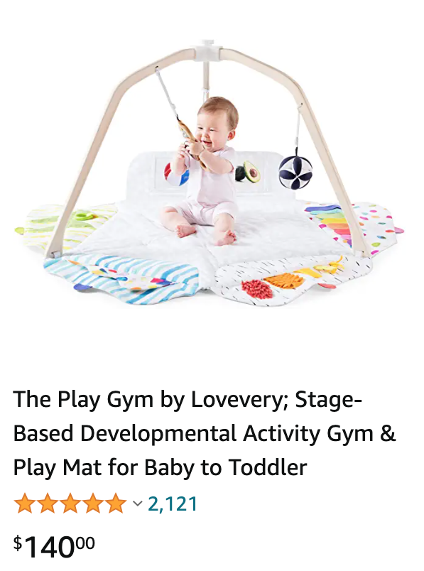

How is our product performing on Amazon?
Scenario:
You work in the analytics department of a small company. The company has been wildly successful in selling their most recent product, "The Play Gym", via Amazon.com. The Play Gym is "everything your child needs in an activity gym from batting to teething to learning to focus for a whole year of play." Now, in order to research new product ideas, your boss would like to know what else your customers purchase on Amazon. So you login to your sql database, and query the information. Except, the database doesn't exist. You don't know what else your customers purchase, because they purchase products from other companies. How would you compile that type of information about your customers.
Initial Exploration:
You're a go-getter, so you decide to go to the product page on Amazon.com and do some digging into the customer reviews. Wow, over 2000 Reviews! You then click on one of the customer's profile to see what other products they have reviewed to see if you can find correlated products. When you click on their profile, the page says they have left over 50 reviews. You do the math (2000 customers * 50 reviews. = "too many") and realize that is too many reviews to manually scan through. As a good data scientist, you create an automated solution.
Automated Solution
Develop a 2-Step plan to build a good database for further customer analysis.
- Scrape all of the reviews from Amazon and gather a list of all the customer ids
- Using the customer ids from Step 1, gather a list of products purchased and reviewed by these customers
Step 1. Web Scraper - Reviews
The web scraper is developed using R's rvest package. The full code, "Amazon_Review_Scraping_Lovery" is availble ( see github) for the specified product. The scraper compiles a list of all the reviews, reviewers, and other relavant information, by going through each review page on Amazon. You can see the output here (via github), "reviews_all_df_B075R8BXXC_2019-12-17.RDS"
Step 2. Web Scraper - Other Problems
Using the customers gathered from the Step 1, you then try to implement a similar solution to scrape each review that the users have left on other products. However, as mentinoed in the Initial Exploration, Amazon has made each customer's review profile load reviews dynamically as the end-user scrolls down. The rvest package can only scrape the reviews that are on the initial view of the web page.
The Solution - Automation Bot (via github)
You need a solution that allows you to scrape the web page information dynamically. In this case, you need to be able to scroll down on the user review page to allow more reviews to load. The best solution is a bot. The bot allows you to control an automated browser (e.g. chrome) and then can scrape the web page as new information loads. This allows you to see and scrape all the information on the web page, just as a human user would see, but obviously much faster.